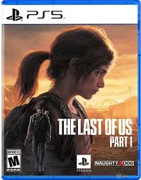

TIENDA DE VIDEOJUEGOS
Click aqui para regresar

| JUEGO | DESCRIPCION |
|---|---|
| Ratchet Clank
Precio: $50.000 Ratchet es un héroe con un corazón de oro y un arsenal destructivo. Nunca se aparta demasiado de su compañero Clank. Ratchet es un mecánico experto que ha usado su ingenio para salvar el universo más veces de las que puede recordar. |
|
 |
Returnal
Precio: $80.000 Tras un aterrizaje forzoso en este mundo cambiante, Selene debe explorar el paisaje desolado de una antigua civilización para escapar. Aislada y sola, tiene que pelear con uñas y dientes para sobrevivir, pero se ve derrotada una y otra vez, y no tiene más opción que volver a empezar su travesía cada vez que muere. |
 |
Spider Man 2
Precio: $75.000 Marvel's Spider-Man 2 es un juego para un jugador. Pero podrán jugar con dos personajes, Peter Parker y Miles Morales, y cambiar entre los dos heroicos Spider-Men durante sus aventuras de lucha contra el crimen para vivir y experimentar el estilo de juego, habilidades e historia de cada uno de ellos. |
|  | The Last Of Us 1
Precio: $85.000 En una civilización devastada, donde los infectados y los empedernidos sobrevivientes proliferan, Joel, un protagonista cansado, es contratado para rescatar de contrabando a una niña de 14 años llamada Ellie de una zona de cuarentena militar. Sin embargo, lo que comienza como un pequeño trabajo pronto se transforma en una brutal travesía por todo el país. |